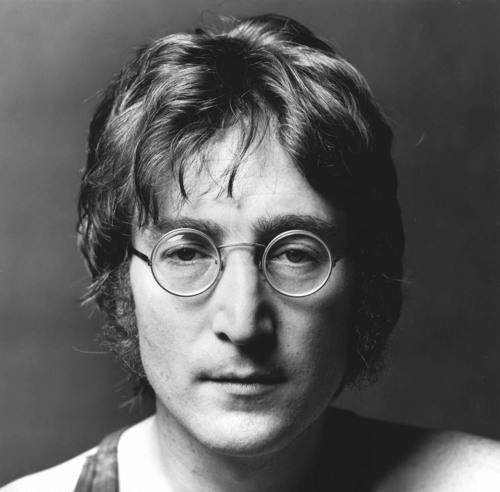

The Beatles

Jonh Lennon

John Winston Ono Lennon MBE foi um cantor, compositor e ativista da paz britânico que fundou os Beatles, a banda de maior sucesso comercial na história da música popular. Sua parceria de composição com o colega de banda Paul McCartney foi uma das mais célebres da história da música.
Nascimento: 9 de outubro de 1940, Liverpool, Reino Unido
Assassinato: 8 de dezembro de 1980, Edifício Dakota, Nova Iorque, Nova York, EUA